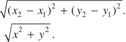

In this chapter, you have studied the following points :
- 1.The distance between P(x_{1}, y_{1}) and Q(x_{2}, y_{2}) is .

- 2.The distance of a point P(x, y) from the origin is
- 3.The coordinates of the point P(x, y) which divides the line segment joining the
points A(x_{1}, y_{1}) and B(x_{2}, y_{2}) internally in the ratio m_{1} : m_{2} are
\(\frac{m x12+m2x1,}{m+m} 1 2 \frac{m1y2+m2y1}{m+m} 1 2\)
- 4.The mid-point of the line segment joining the points P(x_{1}, y_{1}) and Q(x_{2}, y_{2}) is
\(\frac{x1+x2,}{2} \frac{y1+y2}{2}\) .